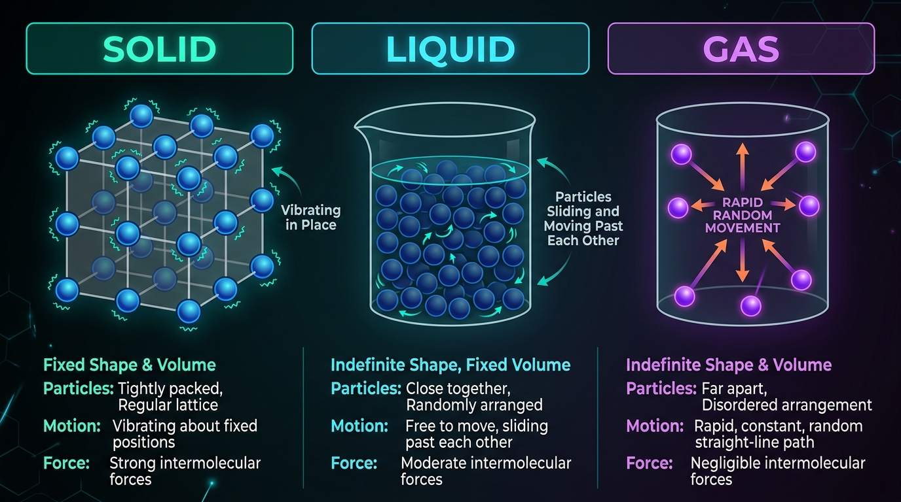
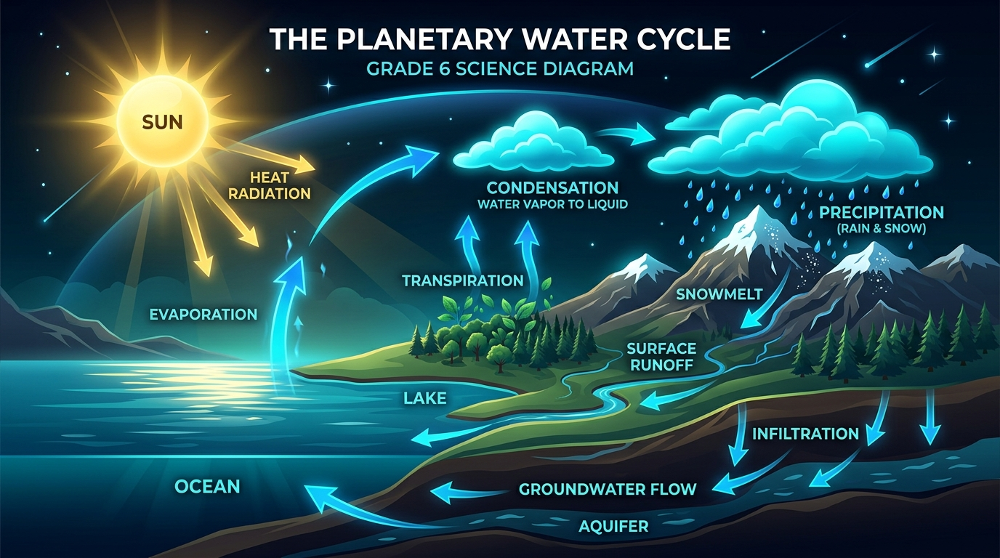
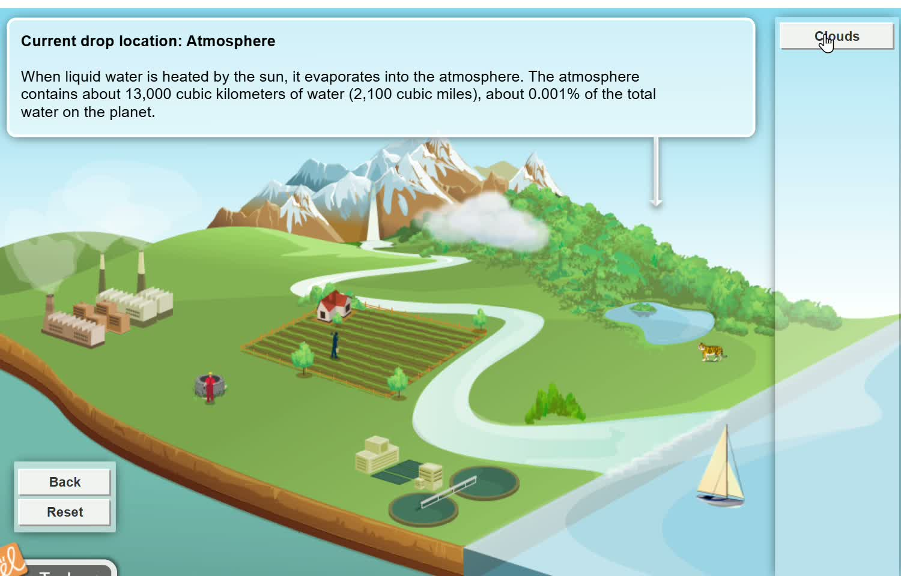
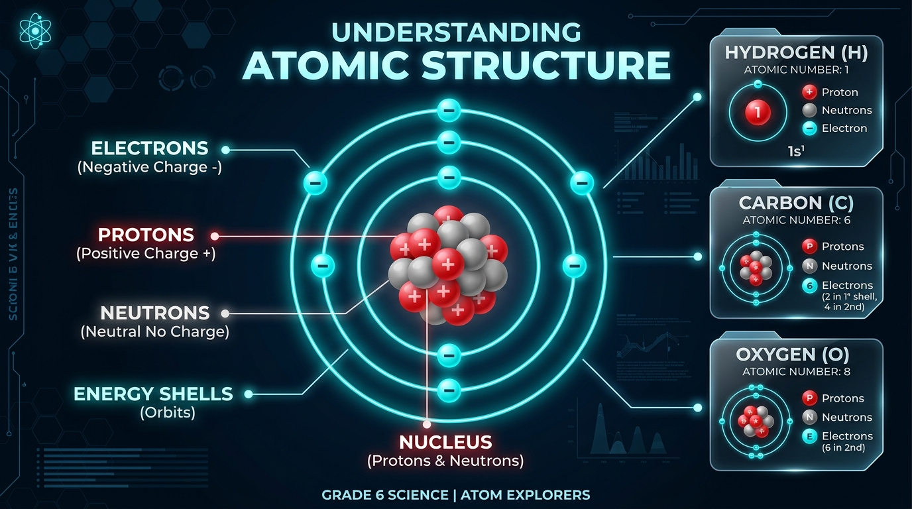
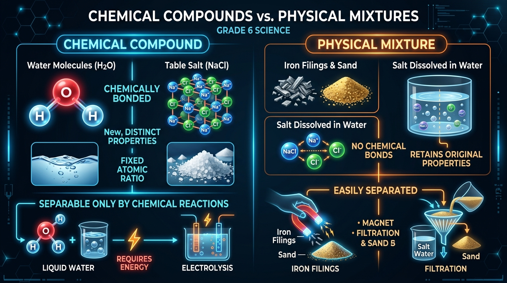

Explore the Hidden Architecture of Matter
All matter in the universe is made of microscopic particles. Discover how atomic arrangements dictate solids, liquids, and gases, simulate real-time thermal phase changes, trace the planetary water cycle, assemble molecules, and physically separate mixtures.
Solids, Liquids, and Gases
All matter in the universe is made of microscopic particles. The spacing, arrangement, and motion of these particles dictate whether a material is a solid, a liquid, or a gas.

1. Solid State
Particles are tightly packed in a regular, fixed geometric lattice. The forces of attraction are strong enough to prevent them from moving freely.
- Fixed Shape & Fixed Volume
- Incompressible (no empty gaps)
- Particles only vibrate in place
2. Liquid State
Particles are still close together, but have enough kinetic energy to break out of fixed positions and slide smoothly past one another.
- Variable Shape (Takes Container)
- Definite, Fixed Volume
- Fluid motion; virtually incompressible
3. Gaseous State
Particles have high kinetic energy and are separated by massive empty distances with negligible attractive forces. They expand to fill any space.
- No Fixed Shape, No Fixed Volume
- Highly Compressible
- Rapid random straight-line motion
Interactive Particle Dynamics Simulator
Changes of State & Energy Transitions
State Transition Engine
Phase changes are physical transformations caused by adding or removing thermal energy (heat). Heat alters particle kinetic movement without changing the chemical identity of the substance.
The Constant Temperature Rule (Latent Heat)
When ice melts at $0^\circ\text{C}$ ($273\text{ K}$) or water boils at $100^\circ\text{C}$ ($373\text{ K}$), the temperature remains completely constant even as heat is continuously pumped in!
Thermal energy no longer increases particle kinetic speed (which is what a thermometer measures). Instead, all incoming energy is consumed as Latent Heat to overcome and sever the intermolecular bonds between molecules!
Interactive Water Heating Curve & Latent Heat Flatlines
The Planetary Water Cycle
Earth's water cycle is a massive global heat engine demonstrating state changes on a planetary scale, powered continuously by solar radiation.

Interactive Hydrological Journey Simulator

When liquid water is heated by the sun, it evaporates into the atmosphere. The atmosphere contains about 13,000 cubic kilometers of water (2,100 cubic miles), about 0.001% of the total water on the planet.
Path of water
Chronological progression of the water droplet through Earth's systems
Sun heats liquid water in oceans, lakes, and plant leaves, transforming it into invisible water vapor.
As vapor ascends into the cool upper atmosphere, it condenses around dust particles to form dense clouds.
Water droplets inside clouds merge and become heavy, falling back to Earth as rain, snow, sleet, or hail.
Precipitation flows down mountains into streams, rivers, subterranean aquifers, and back to oceans.
Atoms, Elements & The Periodic Table
An atom is the smallest fundamental unit of matter. An element is a pure substance consisting of only one type of atom that cannot be broken down by ordinary chemical means.

Anatomy of an Atom
Every atom contains three fundamental subatomic particles:
Interactive 3D Bohr Atomic Structure
Compounds, Formulae & Mixtures
Matter combines chemically or physically. Understanding the boundary between compounds and mixtures is fundamental to all science.

NCERT Diagnostic Matrix: Chemical Compounds vs. Physical Mixtures
| Feature Profile | Chemical Compound | Physical Mixture |
|---|---|---|
| Composition | Elements combined in a strict fixed ratio by mass (e.g. $\text{H}_2\text{O}$ is always 2:1). | Substances mixed in any arbitrary proportion (e.g. more or less sugar in water). |
| Chemical Properties | Properties are completely new & distinct from parent elements. (Hydrogen is explosive gas and Oxygen fuels fire, but Water puts out fire!). | Components retain their original individual properties (Iron remains magnetic, Sand remains gritty). |
| Bonding & Energy | Chemical bonds formed; energy (heat/light) usually absorbed or released during synthesis. | No chemical bonds formed; no chemical energy exchange during simple physical mixing. |
| Separation Method | Requires chemical reactions or electrolysis to split apart. | Easily separated by physical methods: magnets, filtration, evaporation, sieving. |
| Examples | Pure Water ($\text{H}_2\text{O}$), Carbon Dioxide ($\text{CO}_2$), Table Salt ($\text{NaCl}$) | Air, Iron filings + Sand, Saltwater, Soil, Muddy water |
Chemical Compound Molecular Architecture
Separating Mixtures: Magnetism, Filtration, & Evaporation
Extracts magnetic materials like Iron ($\text{Fe}$) from non-magnetic sand or sulfur without any chemical change.
Separates insoluble solid particles (e.g. sand or tea leaves) from a liquid through porous filter paper.
Heats a solution (e.g. saltwater) so the liquid evaporates as vapor, leaving pure salt crystals behind.
Interactive Mastery Evaluation
Test your mastery of NCERT Grade 6 Materials & Structure. Instant inline scientific feedback is provided for every question—no popup dialogs or modals.
1. Why does pure water retain a completely constant temperature (100°C) while boiling vigorously?
2. Which statement accurately describes particles in the solid state?
3. In the planetary water cycle, what stage occurs when ascending water vapor cools and transforms into clouds?
4. Which subatomic particles reside within the dense central nucleus of an atom?
5. How does a chemical compound differ fundamentally from a physical mixture?
6. Which physical separation method would best separate iron filings from yellow sulfur powder or sand?